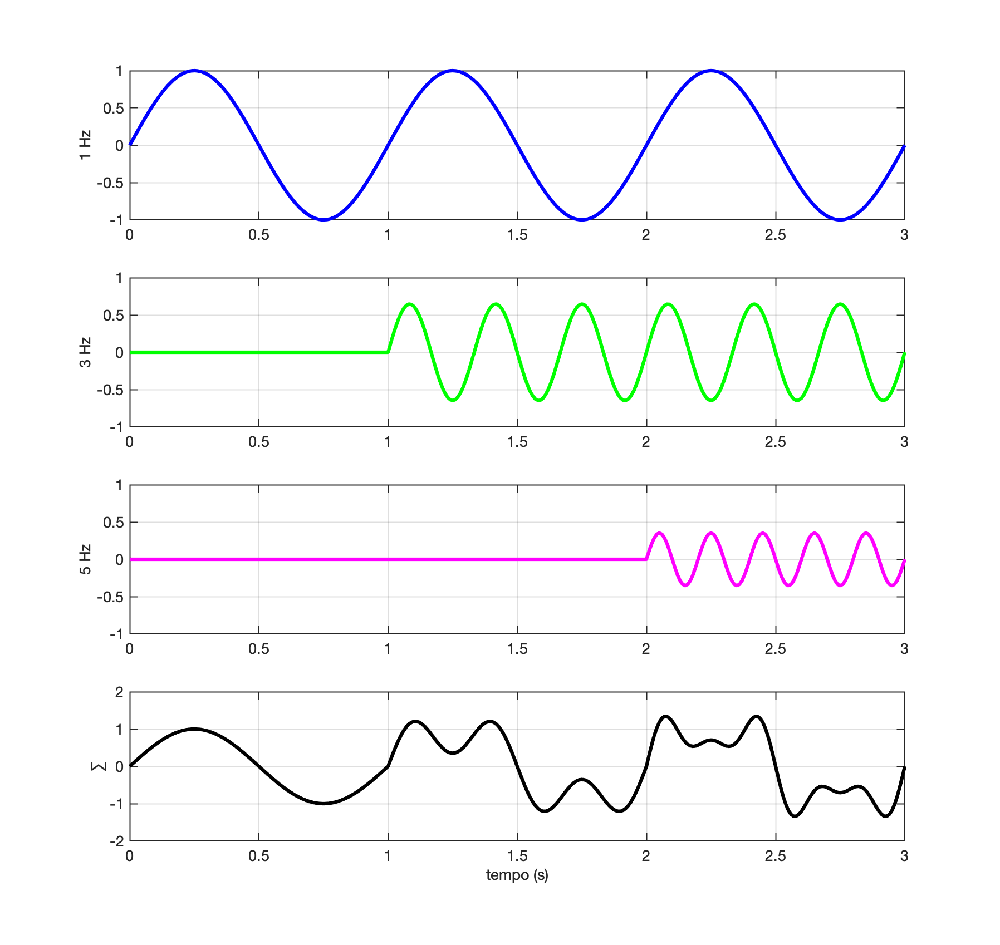

Fourier Series (Simulation)
Based on the YouTube video from Aion, 👉 How the Fourier Transform really works (explained visually) or Como a Transformada de Fourier realmente funciona (explicado visualmente), (Subtitled version in Brazilian Portuguese), published in 08.10.2026.

It was assumed that the amplitudes of the harmonics were:Without phase shifts in each harmonic (
Code using Octave/Matlab:
xxxxxxxxxx>> clear all>> A=[1 0.647 0.353]; % harmonic amplitudes>> f=[1 3 5]; % freq. (in Hz) of the harmonics>> >> T=1/f(1) % fundamental wave periodT = 1>> t_fim=3*T; % simulation end time>> t=0:T/100:t_fim; % creating a time vector, 100 samples per cycle>> >> y1=A(1)*sin(2*pi*f(1)*t); % fundamental occupies entire interval t=[0, t_end]>> >> y2=zeros(1,length(t)); % second-harmonic vector, initialized with zero>> y2(1,101:end)=A(2)*sin(2*pi*f(2)*t(101:end)); % y2≠0 at t=[T, end]>> >> y3=zeros(1,length(t)); % third-harmonic vector, initialized with zeros>> y3(1,201:end)=A(3)*sin(2*pi*f(3)*t(201:end)); % y3≠0 at t[2T, end]>> >> y=y1+y2+y3; % forms the complete signal y(t)>> >> % Plotting the result>> figure; >> subplot(411); plot(t,y1,'b')>> grid>> ylabel('1 Hz')>> >> subplot(412); plot(t,y2,'g')>> grid>> ylim([-1 1])>> ylabel('3 Hz')>> >> subplot(413); plot(t,y3,'m')>> grid>> ylim([-1 1])>> ylabel('5 Hz')>> >> subplot(414); plot(t,y,'k')>> grid>> ylabel('∑')>> xlabel('time (Plotting the result)')Square Wave
Another example, highlighting the case of the square wave with animation.

Sources: Fourier Series (Série de Fourier, in Brazilian Portuguese) & Square Wave Synthesis (Síntese de Onda Quadrada, in Brazilian Portuguese).
Fernando Passold 📧 | Electrical Engineering and Computer Engineering Courses , 13.10.2026.